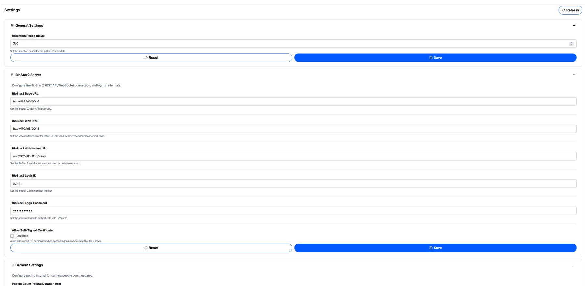

Administration
These pages configure AI LOTO application accounts and system behavior. BioStar worker users are separate and are managed from the embedded BioStar User Management page.
1. User Management (LOTO web accounts)
Use this page for people who sign into the AI LOTO web application—such as administrators, operators and viewers. It is not the BioStar worker database.

- Click New.
- Enter Name and Email.
- Select one or more Roles.
- For a new user, enter and confirm a password that meets the displayed password policy.
- Save. Existing users can be viewed, edited, have their password changed, or deleted when allowed.

2. Roles & Permissions
The permission matrix shows which API actions each LOTO role can perform. Standard roles include Admin, Operator, Viewer and User.

| Role | Default behavior |
|---|---|
| Admin | All application permissions. |
| Operator | All non-admin-only functions except DELETE. No Users/Roles/Permissions/BioStar admin endpoints. |
| Viewer | GET/read access to operational pages, plus the Gate Open and Gate Close commands. Basic Settings GET is also allowed. |
Admin-only subjects include LOTO Users, Roles, Permissions and the embedded BioStar 2 management session.
3. Settings
The Settings page is grouped into General, BioStar2 Server and Camera Settings.

| Setting | Default / Example | What it controls |
|---|---|---|
| Retention Period | 365 days | How long system data is retained. |
| BioStar2 Base URL | http://192.168.100.18 | Base URL used by AI LOTO Monitoring to access the BioStar 2 REST API. |
| BioStar2 Web URL | http://192.168.100.18 | Browser-facing BioStar 2 Web UI address used by the embedded management page. |
| BioStar2 WebSocket URL | ws://192.168.100.18/wsapi | WebSocket endpoint used to receive real-time BioStar 2 events. |
| BioStar2 Login ID | admin | BioStar 2 administrator account used by AI LOTO Monitoring. |
| BioStar2 Login Password | Configured password | Password used to authenticate with the BioStar 2 server. |
| Allow Self-Signed Certificate | Disabled | Allows connection to an on-premise BioStar 2 server that uses a self-signed TLS certificate. |
| People Count Polling Duration | 1000 ms | How often the system requests people-count information from the Visionary cameras. |
4. Log Viewer
Use Log Viewer when a device action does not behave as expected. You can filter/search logs, select a level, use a date/time range, refresh, start/stop live streaming and download logs for support.

5. Theme, language and About
The application header provides:
- Language switch — changes supported UI language.
- Theme switch — toggles light/dark mode. Runtime logic is unchanged.
- User menu / About — shows application information/version and Logout.


6. Viewer page behavior
Viewer accounts retain operational visibility without configuration controls. On Gateway, Gate, Camera and Access Device pages, create/edit/delete controls are hidden. Viewer can still open Details. Gate Open/Close remains available by default.